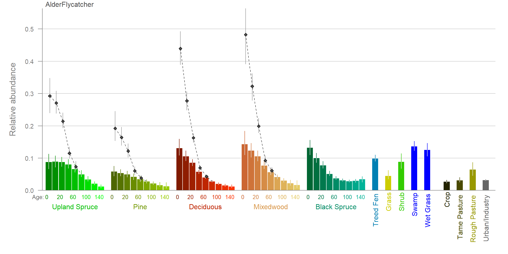
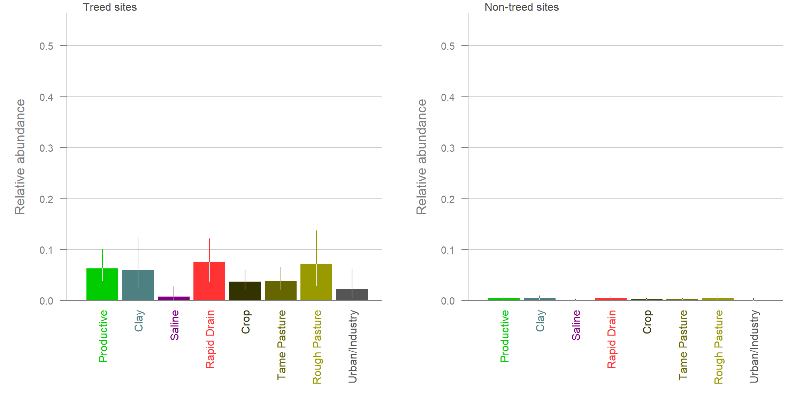
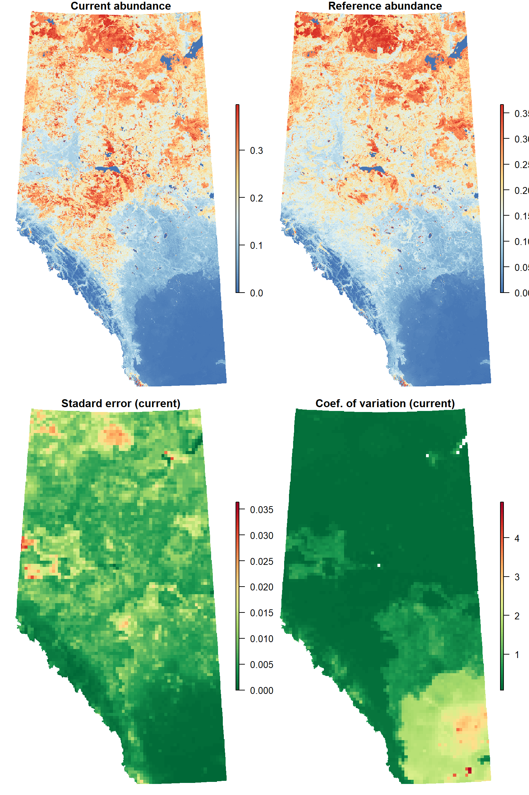
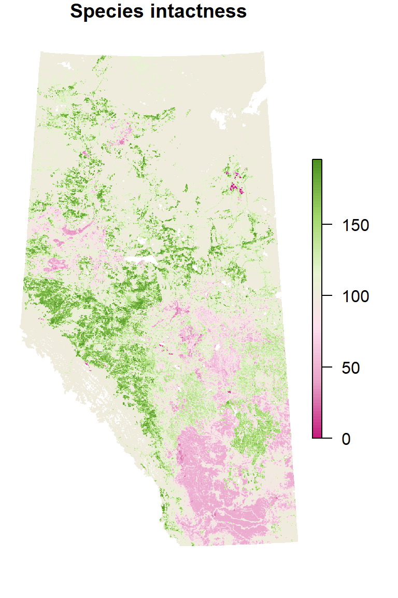
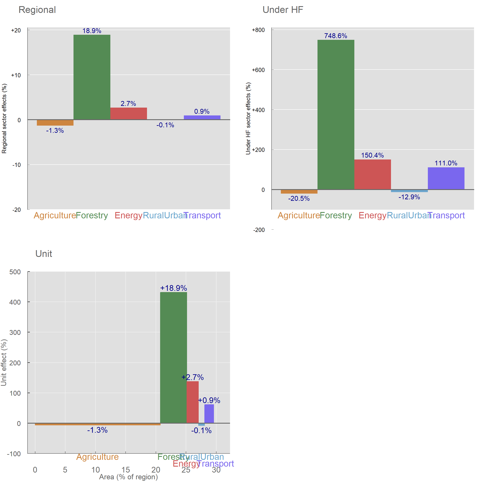
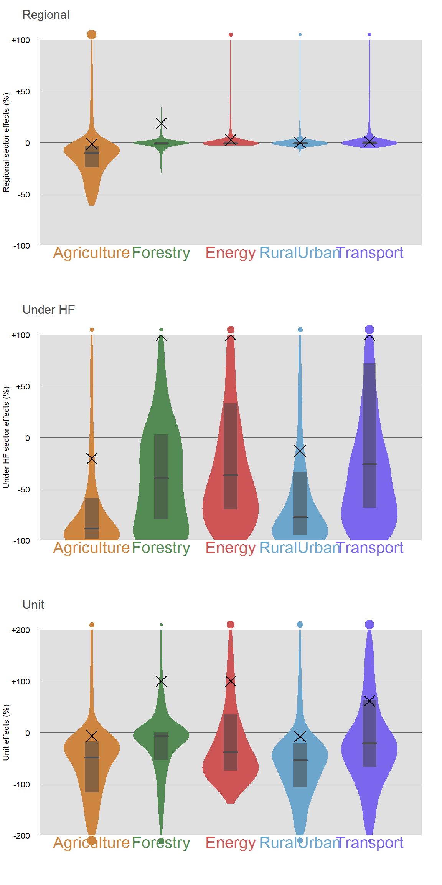
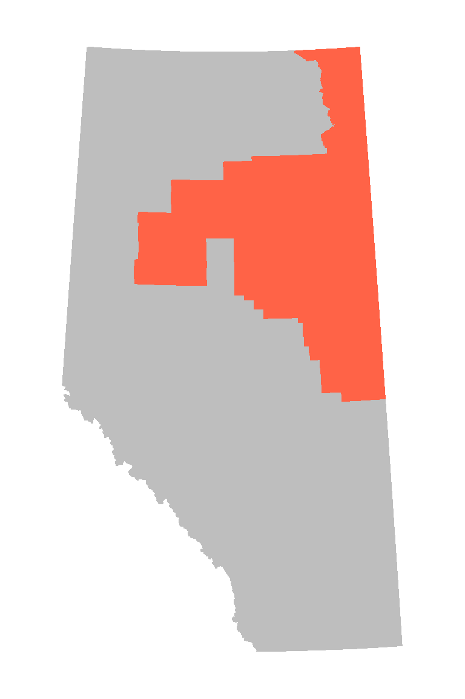
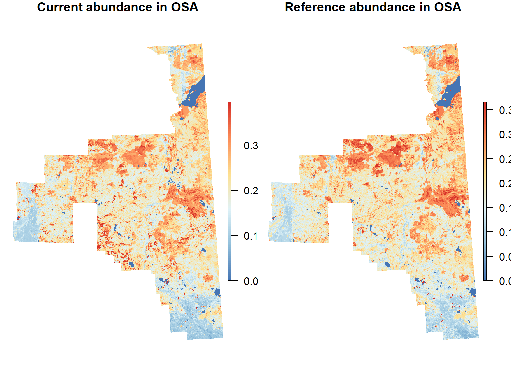
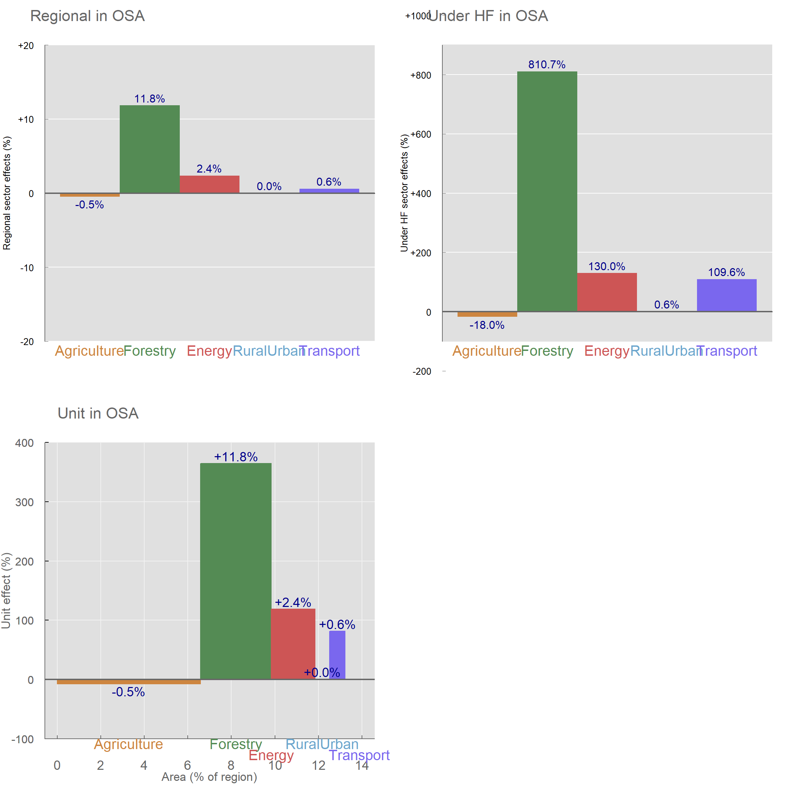

This example report has been produced using the cure4insect R package which a decision support tool that provides an interface to enable custom reporting for intactness and sector effects based on estimates and predictions created by the Alberta Biodiversity Monitoring Institute (ABMI) in collaboration with the Boreal Avian Modelling (BAM) Project.
"AlderFlycatcher"
Models were used to show how species’ relative abundance differed among vegetation and human footprint types in the Boreal and Foothills regions of Alberta. Predicted species abundance in each habitat type is shown with bars. Vertical lines indicate 90% confidence intervals. Dots within the forested habitat types show predicted species abundance in cutblocks of various ages.

Models were used to show how species, relative abundance differed among soil and human footprint types in the grassland and parkland regions of Alberta. Due to natural disturbances and vegetation succession, varying amounts of aspen and other trees may be present on each soil type; the presence/absence of trees greatly affects the presence and abundance of many biota. As such, information is presented twice for southern Alberta: once for sites with trees present, and once for sites without trees present. Predicted species abundance in each soil/human footprint type is shown with bars. Vertical lines indicate 90% confidence intervals.

Habitat association models, plus models describing how species varied spatially and with climate gradients were used to predict species abundance in 1 km\(^2\) spatial units under reference conditions. Predictions of relative abundance of the species in each 1 km\(^2\) unit were made based on the vegetation and human footprint present in the 1 km\(^2\) unit in (current condition) and after all human footprint in the 1 km\(^2\) unit had been ‘backfilled’ based on native vegetation in the surrounding area (reference condition). Pixels depicted in red are predicted to have the highest abundance for the species, grading through light tan to dark blue where the species is predicted to be less abundant or absent.
To highlight the degree of uncertainty in the models, we estimated the prediction standard error and coefficient of variation for each 10 km x 10 km units based on bootstrap predictions of current abundance. 10 km x 10 km units depicted in red have the highest standard error, while 10 km x 10 km units in dark green have the lowest.

Intactness compares the current and reference abundances in each pixel.
For each 1 km\(^2\) unit the % ratio between predicted current and reference conditions was determined. In 1 km\(^2\) units depicted in green the species was predicted to have higher abundance under present conditions than under reference conditions, with the opposite true for 1 km\(^2\) units depicted in pink. The intensity of green and pink depict the relative magnitude of increase or decrease for the species between reference and current conditions.

The table shows provincial abundance totals and corresponding intactness values:
| Estimate | Lower | Upper | |
|---|---|---|---|
| Current | 25440.68 | 22619.93 | 32356.02 |
| Reference | 21006.78 | 18473.21 | 28507.77 |
| Intactness | 82.57 | 80.72 | 90.02 |
| Intactness2 | 117.43 | 109.98 | 119.28 |
The effect of each type of human development (herein called a sector) on a species relative abundance is the product of the area of the sector’s footprint, and the average “per unit area” effect of that sector’s footprint on the species relative abundance (unit effect). The combination of the two results in the regional total effect on expected abundance of a species (regional total effect). When the effect on species is only quantified within the sector footprint, i.e. not taking into account native vegetation, we call it under the footprint sector effect.

The table shows the sector effect results for the species across the entire province:
| Agriculture | Forestry | RuralUrban | Energy | Transportation | |
|---|---|---|---|---|---|
| Current | 1061.67 | 4500.56 | 110.44 | 935.25 | 370.53 |
| Reference | 1336.10 | 530.33 | 126.80 | 373.50 | 175.60 |
| Area | 20.75 | 4.38 | 1.01 | 1.94 | 1.51 |
| Total | -1.31 | 18.90 | -0.08 | 2.67 | 0.93 |
| UnderHF | -20.54 | 748.63 | -12.90 | 150.40 | 111.01 |
| Unit | -6.29 | 431.73 | -7.72 | 137.82 | 61.47 |
We can also look at where does the species fall among the rest of the species in terms of the sector effects, \(\times\) marks the species:

The region of interest can be defined based for example on a spatial polygon. Based on the spatial subset, we summarize abundance, intactness, and sector effects.


| Estimate | Lower | Upper | |
|---|---|---|---|
| Current | 8112.36 | 7283.48 | 10155.45 |
| Reference | 7096.10 | 6380.36 | 8967.61 |
| Intactness | 87.47 | 86.58 | 90.63 |
| Intactness2 | 112.53 | 109.37 | 113.42 |
| Agriculture | Forestry | RuralUrban | Energy | Transportation | |
|---|---|---|---|---|---|
| Current | 155.16 | 944.20 | 47.85 | 297.90 | 79.80 |
| Reference | 189.12 | 103.68 | 47.58 | 129.52 | 38.06 |
| Area | 6.59 | 3.25 | 0.67 | 2.00 | 0.72 |
| Total | -0.48 | 11.84 | 0.00 | 2.37 | 0.59 |
| UnderHF | -17.96 | 810.68 | 0.57 | 130.00 | 109.65 |
| Unit | -7.26 | 364.60 | 0.57 | 118.72 | 81.62 |
